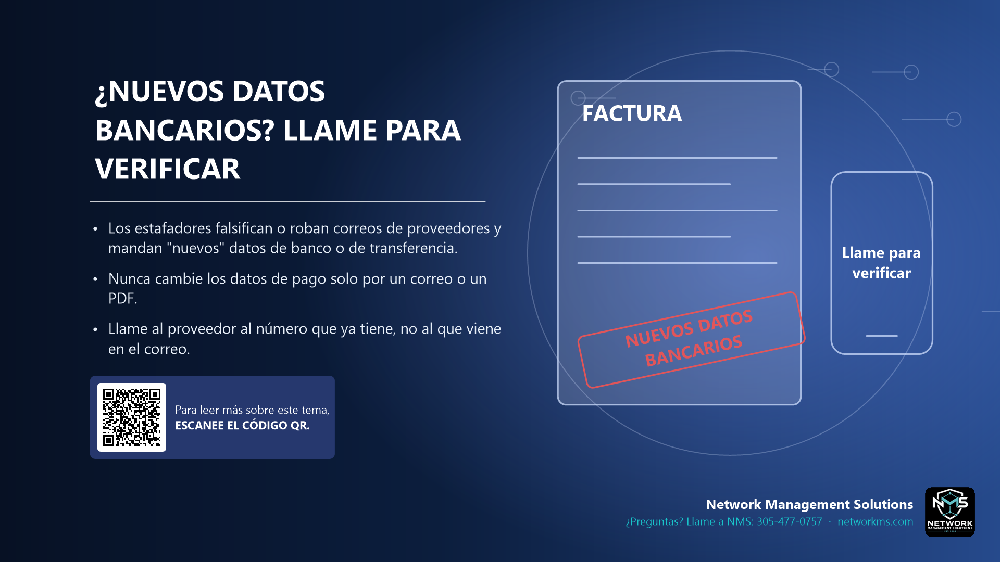

¿Nuevos datos bancarios? Llame para verificar

- Los estafadores falsifican o roban correos de proveedores y mandan "nuevos" datos de banco o de transferencia.
- Nunca cambie los datos de pago solo por un correo o un PDF.
- Llame al proveedor al número que ya tiene, no al que viene en el correo.
Esta estafa se llama Business Email Compromise (BEC). El delincuente entra al correo de un proveedor o cliente, o crea una dirección parecida, y espera una factura real. Luego manda un mensaje diciendo que la cuenta del banco cambió.
El correo se ve normal, usa los nombres correctos y puede seguir una conversación real. Lo único que cambia es a dónde va el dinero. Una vez enviada la transferencia o el ACH, es muy difícil recuperarlo.
Regla: todo cambio de datos bancarios, toda transferencia urgente o todo pago a una cuenta nueva se confirma por teléfono, a un número que ya tenía, antes de mover el dinero.
¿Tiene dudas sobre un correo, mensaje o llamada? Llame a NMS antes de hacer clic: 305-477-0757 · networkms.com